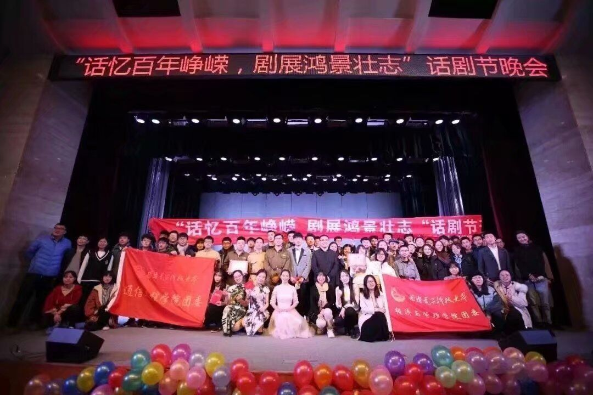

第三版
第三版

革命的电波盘旋在城市上方，胜利的喜悦传递过大街小巷。话剧《永不消逝的电波》又一次落下帷幕，现场掌声如雷。多少年来，西电话剧团在校训“厚德求真，砺学笃行”的指引下，不断推敲台词、磨练舞台，为观众打造出了一场又一场精彩的演出。
业精于勤，穷当益坚
西电话剧团始终秉持着“业精于勤，穷当益坚”的理念，认真排练、演出。而他们与话剧结缘，最初可能只是一个微妙的念头。西电话剧团团长韩博说：“最开始接触到话剧其实还是高中的时候，当时语文课学到《雷雨》，才对话剧有了一个初步了解。在那之后看过几部传统话剧，就对话剧产生了浓厚的兴趣。”
对话剧的喜爱促使韩博加入了话剧团，然而再浓厚的兴趣也无法消除现实中存在的困难。所谓台上十分钟，台下十年苦功，话剧的排练与演出并不像想象中那么简单。大一时，还是“话剧新人”的韩博参演了话剧团专场的一部小品，当时整部剧剧本上存在着很大的问题，而且演员都是没有基础的大一新生，对于台词表达及舞台表演的掌控都略欠火候。这样的程度，当然是不能上台演出的，时间紧急，能做的只有不断的打磨、排练。“那时包括导演在内，几乎每天大家都在大活加班加点的排练、改剧本，常常熬到天黑。剧本删删改改，对应的表演方式、表演细节也要重新磨练，一直到演出的前几天都还在磨合。在一次次废寝忘食的排练下，最终的演出效果非常好。”
揣摩角色是话剧演出中至关重要的一环，演出效果动人与否，往往取决于演员本人与角色之间的距离，但是对角色的揣摩也并不容易。韩博表示，揣摩角色时有时会找不清楚人物形象，导致排练的时候无法进入角色，没有状态，最后的演出效果就会很差。摸清楚一个人物，就要把自己代入到当时的情境下，来来回回地思考这个人说的每一句话，细细推敲每一个字、每一个表情和动作背后的含义。他的情感到底是怎么样的、他做这件事的时候心里到底在想什么。要下足了功夫，一遍遍枯燥地重复，与角色达到心理上的共通，才能在扮演角色的时候如鱼得水，让观众信以为真不会出戏。
这谈到一次演出经历，韩博表示仍“心有余悸”：“去年在演出的时候由于场务的失误搬错桌子，导致道具全部留在台下，演出时找不到道具。当时真的'惊险万分'，太考验临场能力了。我和另一个演员现挂了几句词找了个下台的机会，把道具拿了上来。”临场变通能力和稳定的心态，也是作为西电话剧人不可缺少的一部分。
薪火相传，砥砺前行
提起西电话剧团，就不能不谈话剧《永不消逝的电波》。《永不消逝的电波》是西电原创精品剧目，讲述了西电在中国革命的多个关键节点上，通过技术服务为解放祖国发挥作用的故事。其中塑造的王诤校长与李白烈士等形象，更是引人潸然泪下。提起《电波》，话剧团成员都十分尊敬：“话剧《永不消逝的电波》贯穿西电建校89年的历史，演绎了我校在中国的通信史上做出的卓越贡献。西电学子应该了解《电波》，了解西电半部电台起家，长征路上办学的校史。”
《永不消逝的电波》对于西电话剧团来说，不只是一部演出剧目。它演绎着西电的前世今生，也演绎着西电话剧团的前世今生。对此韩博表示：“《永不消逝的电波》每一年都会在西电或者在其他学校进行演出，但今年由于疫情，我还没有机会参加《电波》的排练和演出，但是明年校庆我们会复排电波，到时候会有专业的老师进行指导排练，我们也会和学长学姐们带着学弟学妹传承这一经典。”通过扮演学长，重回革命的年代，重演西电办学史。“与先辈的距离一下子拉近了，仿佛回到那个年代。”那种艰苦奋斗、自强不息、求真务实的精神穿透厚重的历史，为西电话剧人的人生启明，激励着一代代话剧人人奋发图强。薪火相传，传承的不仅是一部话剧，更是话剧中蕴藏的高尚品德和不屈精神，指引着西电话剧人砥砺前行。
无心插柳，水到渠成
参演话剧，初衷或许只是兴趣所在，抑或只是为课余生活增色。然而，话剧表演却在潜移默化中影响到了剧团成员的学习生活。“参与话剧表演让我更加有自信，而且在平时的交流中说话更加清楚。在话剧课上，我能够学到更多的知识。”话剧演员塑造一个角色，也往往会受到角色既往经历和性格的影响。西电话剧团成员表示：“参演话剧，让我更积极面对生活。有时候自己的心理状态会受到人物的影响，做事的时候想到曾经饰演过的角色，会情不自禁去想如果那个角色会怎么做。”由于全身心的沉浸与代入，话剧对演员的影响往往是潜移默化、深远持久的。无心插柳柳成荫，参与话剧表演往往能带来意想不到的收获。
当提及排练、演出中的收获，韩博说：“事实上要说最有成就感的事情是什么，还真没有什么特别明确的。但是我相信每一个话剧团团员最有成就感的事都是经过了长达一个月的排练，最后呈现给观众一台完美的演出。或许排练过程中我们会熬夜会吵架，有时候部分团员还会经历心态上的变化，但是在大家坚持排练、顺利完成演出的时候，我相信不论是话剧演员还是场务，大家心里都是很有成就感的。所谓的'成就感'，都是大家充分准备后的'水到渠成'。”
薪火相传、匠心打磨。西电话剧团始终砥砺前行，为呈现更好的剧目潜心磨练。相信在未来，西电话剧团将会带给我们更多、更好的表演，以宣扬西电话剧人精神，弘扬西电精神，为我们奋斗之路提供精神支撑，照耀我们前行的路。